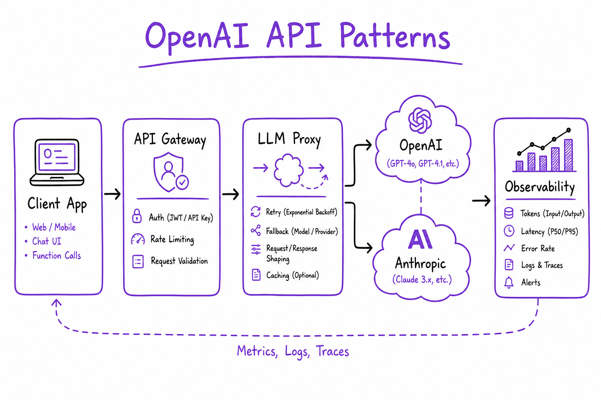
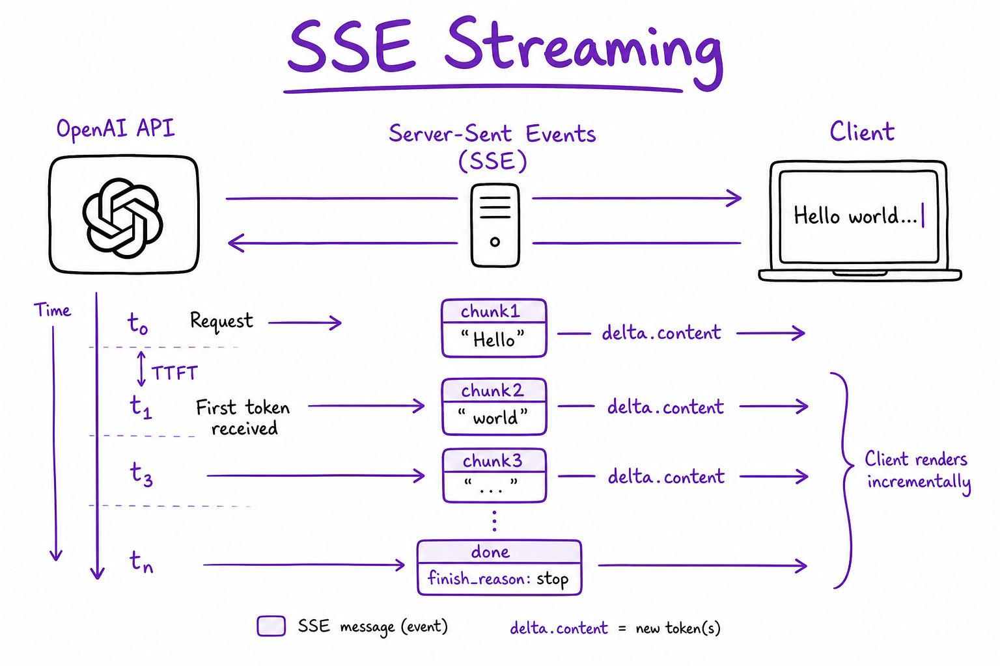
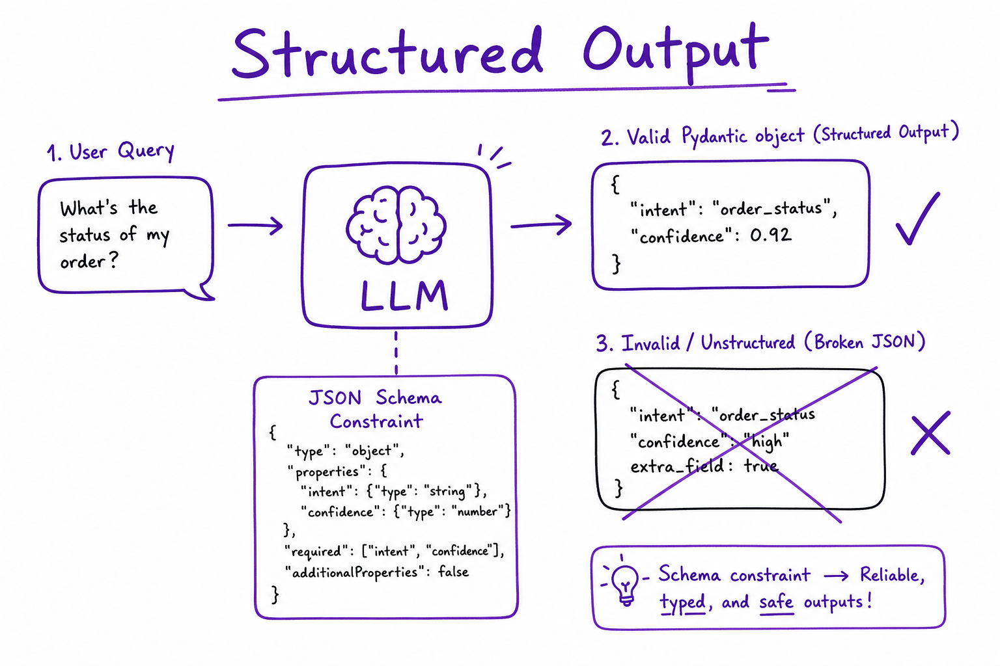

OpenAI / Anthropic API Patterns // AI Tech
Production patterns for chat completions, streaming SSE, structured JSON output, tool/function calling, embeddings, batch API, retries, and multi-provider fallbacks. The API layer every RAG and agent stack builds on.

Request flow: client → auth + rate limit → chat.completions (stream or JSON) → optional tool loop → response. Typical latency: 200–800 ms TTFT streaming; batch API 50% cost discount for offline jobs.
01 — What & Why
Problem: LLM apps need a stable contract for chat, tools, embeddings, and structured data — with streaming UX, cost control, and provider failover.
Functional
- Multi-turn chat with system/user/assistant/tool messages
- Stream tokens to UI (SSE)
- Force JSON / Pydantic schema via structured outputs
- Native tool calling loop (model proposes → you execute → feed results back)
- Embeddings for RAG ingest and query
Non-Functional
- Retries with exponential backoff on 429/5xx
- Token/cost logging per request
- Latency: TTFT <500 ms for gpt-4o-mini class models
See also LLM Fundamentals for tokens and context; this sheet is the integration layer.
01a — Core Concepts
| Term | Definition | Gotcha |
|---|---|---|
| Chat Completions | messages[] in → assistant message out | Not the legacy Completions API (prompt string) |
| TTFT | Time to first token in streaming | User-perceived latency; log separately from total |
| Tool call | Model emits function name + JSON args | You execute; return tool role messages |
| Structured output | response_format json_schema / Pydantic | Still validate server-side — models can drift |
| Batch API | Async file-based jobs, ~50% cheaper | 24h SLA; not for online chat |
01b — API / Interface Surface
from openai import OpenAI
client = OpenAI()
resp = client.chat.completions.create(
model="gpt-4o-mini",
messages=[
{"role": "system", "content": "You are a helpful assistant."},
{"role": "user", "content": "Summarize RAG in 3 bullets."},
],
temperature=0.2,
max_tokens=512,
)
print(resp.choices[0].message.content)
print(resp.usage.total_tokens) # cost loggingAnthropic (Messages API)
import anthropic
cl = anthropic.Anthropic()
msg = cl.messages.create(
model="claude-sonnet-4-20250514",
max_tokens=1024,
system="...",
messages=[{"role": "user", "content": "Hello"}],
)02 — When to Use / When NOT
| Pattern | Use | Alternative |
|---|---|---|
| Direct API | Full control, any language | LangChain for chains/agents |
| Streaming | Chat UX, long answers | Blocking invoke for batch only |
| Structured output | Extract fields, routing JSON | Regex parse (fragile) |
| Batch API | Nightly eval, bulk embed | Realtime chat completions |
03 — Architecture
Client App -> API Gateway (auth, rate limit, request_id) -> LLM Proxy (retry, fallback provider, cache) -> OpenAI / Anthropic / Azure OpenAI -> Observability (tokens, latency, trace_id)
04 — Deep Dive: Streaming

SSE streaming: client receives delta chunks until finish_reason stop; map to WebSocket/SSE for UI.
stream = client.chat.completions.create(..., stream=True)
for chunk in stream:
delta = chunk.choices[0].delta.content
if delta:
yield delta # SSE to browser
# Handle finish_reason: stop | tool_calls | lengthAlways handle finish_reason=length (truncation) and stream tool call argument fragments.
05 — Deep Dive: Structured Output

JSON schema / Pydantic structured output: model constrained to valid object shape for routing and extraction.
from pydantic import BaseModel
class Route(BaseModel):
intent: str
confidence: float
resp = client.beta.chat.completions.parse(
model="gpt-4o-mini",
messages=[...],
response_format=Route,
)
route: Route = resp.choices[0].message.parsed06 — Deep Dive: Tool Calling
tools = [{
"type": "function",
"function": {
"name": "search_kb",
"description": "Search internal knowledge base",
"parameters": {
"type": "object",
"properties": {"query": {"type": "string"}},
"required": ["query"],
},
},
}]
# Loop: completion -> if tool_calls -> run -> append tool results -> completionSee Tool Calling & Functions for schema design and security.
07 — Deep Dive: Embeddings API
emb = client.embeddings.create(
model="text-embedding-3-small",
input=["chunk one", "chunk two"],
dimensions=1536, # optional Matryoshka
)
vectors = [d.embedding for d in emb.data]Batch up to model limit; same model at ingest and query. Link: Embedding Models.
08 — Deep Dive: Batch API & Retries
Retries: exponential backoff + jitter on 429/500/503; respect Retry-After. Max 3–5 attempts.
Batch: upload JSONL of requests → poll job → download results. Ideal for eval harness and bulk embedding.
Multi-provider: abstract behind LiteLLM or custom router; fallback gpt-4o → claude on outage.
09 — Production & Ops
| Concern | Practice |
|---|---|
| Cost | Log tokens; cache system prompts; use mini models for routing |
| Rate limits | Token bucket per tenant; queue overflow |
| Secrets | API keys in vault; never client-side |
| Observability | LLM Observability — trace every call |
10 — Where It Shows Up
- LangChain — wraps these APIs in runnables
- RAG End-to-End — embed + generate calls
- Embedding Models — model choice
- LLM Observability — traces and cost
- Prompt Engineering — message design
11 — Common Pitfalls
- No retry on 429 — thundering herd after rate limit
- Trusting structured JSON without Pydantic validation
- Exposing API keys in frontend
- Ignoring
finish_reason=length— truncated JSON - Mixing Chat Completions with legacy Completion API
- No timeout — hung connections block workers
12 — Interview Q&A
Chat Completions vs Assistants API?
How do you implement streaming to a web UI?
stream=True yields SSE chunks. Your FastAPI route returns StreamingResponse mapping delta.content to client events. Track finish_reason; on tool_calls, switch UI to tool-approval mode.